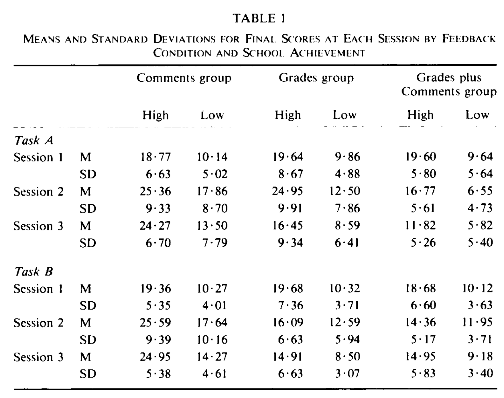
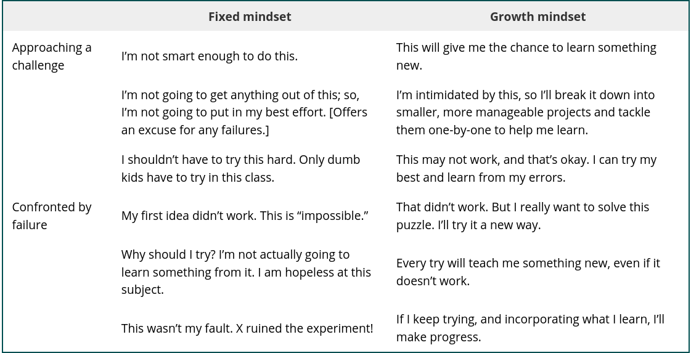

Ungrading¶
This course focuses on providing written feedback instead of assigning numerical scores to assignments. Research shows that scores undercut the effectiveness of written comments in the learning process.
During the course, you will keep a learning journal and 3-5 SMART goals. You should reflect upon your performance and written feedback in your journal. This journal and learning goals should be updated at least weekly, if not more often.
Some of the questions on quizzes and activities will be algorithmically scored or multiple choice. This is intended to provide straightforward feedback on your progress rather than points to collect.
The goal of this course is to give you feedback to better inform your learning and help you adapt to meet your learning goals. Failure is a natural part of the learning process, but adaptive coping is needed to learn from failure.
At the end of the semester, we will meet to discuss your performance. You will propose a final grade and we will discuss how your journal, goals, and feedback support this proposed grade.
A - Excellent. Student is capable of independent learning with and extending the course material.
B - Good. Student understands the core concepts and has extended this understanding in at least one area.
C - Satisfactory. Student understands the core concept and can use, with collaborators or research, the course concepts appropriately.
D - Unsatisfactory. Student understands some of the core concepts but is missing key pieces.